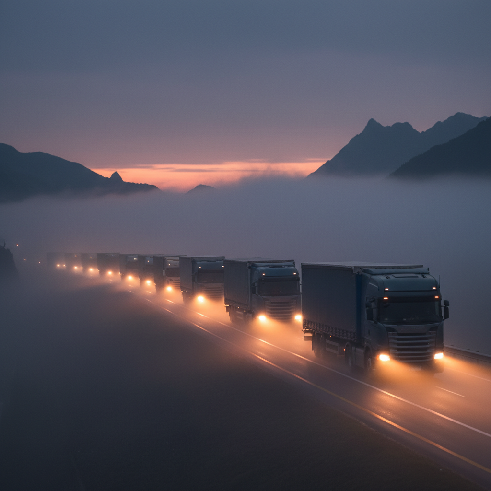

Le Convoi, c'est la branche communauté de KAMION : un serveur, des convois virtuels réguliers, des events et de l'entraide modding. Que tu aies 2 heures ou 200 heures d'ETS2, ta place est là.
Le serveur Discord KAMION ouvre avec le lancement officiel. En attendant, les commandes et les convois s'organisent par contact direct.